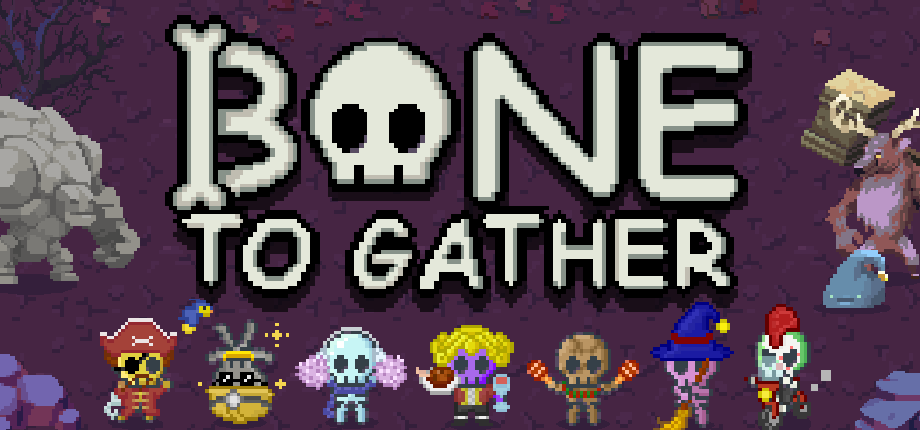

Project link: Bone To Gather프로젝트 링크: Bone To Gather
Publisher presentation: Bone To Gather퍼블리셔 전달용 소개 페이지: 본 투 게더 (영문 작성)

Over 8,000 unique users and more than 100 positive Steam reviews+8,000명 누적 고유 사용자, Steam에서 100건 이상 긍정 리뷰
- Designed the core user experience and prototyped key gameplay mechanics.주요 사용자 경험(UX) 설계 및 핵심 게임 메커니즘 프로토타입 제작
- Programmed the UI and supporting game systems.UI와 부차적인 게임 시스템 전반 프로그래밍
- Developed the game with Unity and C#.Unity C#을 사용한 게임 개발
- Managed the team as project manager using Agile practices and Notion.Agile 방법론 및 Notion을 활용한 프로젝트 매니저로서 팀 관리
- Led marketing activities, including emails to YouTubers, publisher outreach, Discord management, and promotion to curators and the press.마케팅 활동 주도 (유튜버 이메일 발송, 퍼블리셔 연락, Discord 운영, 큐레이터 및 언론사 대상 홍보)
- Handled Japanese, Korean, Traditional Chinese, and Simplified Chinese localisation.일본어, 한국어, 번체 및 간체 중국어 현지화 담당
Genre: #Action #RoguelikeDeckbuilder #Strategy장르: #액션 #덱빌딩 로그라이크 #전략
Game overview: Bone To Gather is a team-building action roguelike in which you assemble a synergistic party of feeble-looking skeletons with distinctive abilities. Use the money earned from defeating monsters to recruit new skeletons, combine their synergies, and set out to defeat the Demon King who mocked their powers.간단한 게임 소개:
Bone To Gather는 하찮지만 독특한 능력을 가진 스켈레톤들로 시너지에 맞는 팀을 구성해 전투하는 팀 빌딩 액션 로그라이크 게임입니다. 방해꾼 몬스터들을 처치하며 얻은 자금으로 다양한 스켈레톤들을 팀에 영입하고, 시너지를 조합해, 그들의 능력을 비웃은 마왕을 무찌르기 위한 복수의 여정을 떠나세요.